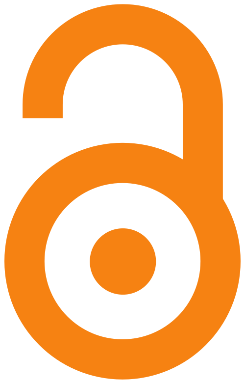

Publicações
Artigos científicos
Durgante FM, CC Vasconcelos, HL Hadlich, CL Mallmann, RO Perdiz, KCM Cunha, SR Chaves, C Paquini, K Torralvo, M Hopkins, J Schöngart, MTF Piedade, PA Sá, MLG Conde, & F Wittmann. Near-infrared spectral signature enables tree species identification from herbarium specimens and standing trees in the Amazon Forest using low-cost and reference spectrometers. Submetido para publicação, 2026. Preprint disponível. DOI 10.32942/X2T97T
White DM, FM Durgante, MW Austin, JA Guzmán Q, JA Kennedy, CO Nichodemus, NI Ahlstrand, C Baraloto, B Bekta¸ K Boughalmi, W Cardinal-McTeague, TLP Couvreur, RP Fortier, RS Fuller, OM Grace, R Jackson, K Karbstein, S Kothari, AK Lee, JL Viana, E Martinez-Victoria, JE Meireles, TH Murphy, C Rodrigues-Vaz, D Spalink, H Tuomisto, CC Vasconcelos, & J Cavender-Bares. A Protocol for Standardizing Measurements and Enabling Global Harmonization of Herbarium Leaf Reflectance Spectra. Submetido para publicação, 2026. Preprint disponível. DOI 10.32942/X2SD4D

Hadlich HL, J Schöngart, F Wittmann, CC Vasconcelos, CL Mallmann, MLG Conde, PA Sá, LO Demarchi, GB Mori, MTF Piedade, & FM Durgante. 2025. Exploring the potential of field spectroscopy for tree species identification in different Amazonian forest ecosystems. Global Ecology and Conservation, 54: e03970. DOI 10.1016/j.gecco.2025.e03970Cavender-Bares J, DM White, NI Ahlstrand, M Austin, D Bastianelli, S Bazan, K Boughalmi, W Cardinal-McTeague, E Chacón-Madrigal, TLP Couvreur, C Davis, FM Durgante, OM Grace, JA Guzmán, K Hansen, MS Hernández-Leal, MJG Hopkins, R Jackson, S Kothari, AK Lee, E Léveillé-Bourret, J Pinto-Ledezma, NLQ Casaverde, JE Meireles, B Neto-Bradley, CO Nichodemus, RH Ree, M Schmull, DE Soltis, PS Soltis, H Tuomisto, S Ustin, & CC Vasconcelos. 2025. Next-generation specimen digitization: capturing reflectance spectra from the world’s herbaria for modeling plant biology across time, space, and taxa. New Phytologist (version of record). DOI 10.1111/nph.70645
Robin M, FM Durgante, CL Mallmann, HL Hadlich, C Römermann, LS Falcão, CD Lacerda, s Duvoisin, F Wittmann, MTF Piedade, J Schöngart, & EG Alves. 2025. Leaf spectroscopy as a tool for predicting the presence of isoprene emissions and terpene storage in central Amazon forest trees. Plant Methods 21(1): 78. DOI 10.1186/s13007-025-01400-w
Vasconcelos CC, IDK Ferraz, FM Durgante, F Wittmann, J Schöngart, MTF Piedade, JLC Camargo, & MH Terra-Araujo. 2025. Ecclinusa nervosa (Sapotaceae, Chrysophylloideae), a new species discovered in Central Amazonia. Systematic Botany 50(1): 55-66. DOI 10.1600/036364425X17466502618821
Livros e relatórios
Antonelli A, C Fry, RJ Smith, J Eden, PJ Kersey, I Larridon, AJ Paton MSJ Simmonds, AM Ainsworth, SP Bachman, M Cheek, CC Davis, F Forest, S Lennon, DP Little, M Nesbitt, E Nic Lughadha, SA Smith, T Wilkinson, …FM Durgante,… CC Vasconcelos, et al. 2026. State of the World’s Plants and Fungi 2026. Royal Botanic Gardens, Kew. DOI 10.34885/rdzs-ky83
Material instrucional
White DM, NI Ahlstrand, MW Austin, D Bastianelli, S Bazan, K Boughalmi, W Cardinal-McTeague, TLP Couvreur, F Durgante, OM Grace, JA Guzmán Q, K Hansen, M Hopkins, R Jackson, JA Kennedy, S Kothari, AK Lee, É Léveillé-Bourret, JE Meireles, BM Neto-Bradley, CO Nichodemus, NL Quinteros Casaverde, C Rodrigues-Vaz, M Schmull, PS Soltis, D Spalink, CC Vasconcelos, JL Viana, H Tuomisto, T Wells, & J Cavender-Bares. 2025. IHerbSpec Protocol. Zenodo. DOI 10.5281/zenodo.15849668
Vasconcelos CC & FM Durgante. 2025. R codes and datasets used in the course ‘Herbarium Spectroscopy with MicroNIR: theory and practice’. Zenodo. DOI 10.5281/zenodo.15531968
Participação em eventos
Resumos
Cunha KCM, FM Durgante, CC Vasconcelos, F Farroñay, JB Silva, A Andrade, & A Vicentini. Resumo: Near-infrared spectroscopy (NIRS) reveals a new species and validates the delimitation of genus Manilkara Adans. in Central Amazonia. In: Workshop Franco-Brasileiro “Botânica do Futuro: Novas Abordagens para o Estudo da Flora Amazônica”, Instituto Nacional de Pesquisas da Amazônia (INPA), Manaus, AM, Brasil. Junho/2026.
Ferreira ER, FM Durgante, CC Vasconcelos, MCAMO Ramos-Ferro, SR Chaves, KCM Cunha, & MJG Hopkins. Resumo: Building a spectral library for the identification of the genus Dipteryx Schreb. (Fabaceae) at the INPA Herbarium. In: Workshop Franco-Brasileiro “Botânica do Futuro: Novas Abordagens para o Estudo da Flora Amazônica”, Instituto Nacional de Pesquisas da Amazônia (INPA), Manaus, AM, Brasil. Junho/2026.
Silva TAM, CC Vasconcelos, MTF Piedade, C Dapolito-Junior, MCAMO Ramos-Ferro, FM Durgante, & LO Demarchi. Resumo: Can near-infrared spectroscopy distinguish morphotypes of Mabea speciosa (Euphorbiaceae s.s.)?. In: Workshop Franco-Brasileiro “Botânica do Futuro: Novas Abordagens para o Estudo da Flora Amazônica”, Instituto Nacional de Pesquisas da Amazônia (INPA), Manaus, AM, Brasil. Junho/2026.
Guedes YJG, FM Durgante, CC Vasconcelos, MCAMO Ramos-Ferro, KCM Cunha, SR Chaves, MJG Hopkins. Resumo: Building a spectral library for the identification of the Bignoniaceae family at the INPA Herbarium. In: Workshop Franco-Brasileiro “Botânica do Futuro: Novas Abordagens para o Estudo da Flora Amazônica”, Instituto Nacional de Pesquisas da Amazônia (INPA), Manaus, AM, Brasil. Junho/2026.
Ataide CS, FM Durgante, CC Vasconcelos, MCAMO Ramos-Ferro, SR Chaves, KCM Cunha, MJG Hopkins. Resumo: Portable NIR Spectroscopy for species discrimination in Ecclinusa (Sapotaceae): Can Amazonian species be distinguished using a low-cost instrument?. In: Workshop Franco-Brasileiro “Botânica do Futuro: Novas Abordagens para o Estudo da Flora Amazônica”, Instituto Nacional de Pesquisas da Amazônia (INPA), Manaus, AM, Brasil. Junho/2026.
Durgante FM, CC Vasconcelos, MCAMO Ramos-Ferro, SR Ramos-Chave, HL Hadlich, CL Mallmann, KCM Cunha, MJG Hopkins, A Vicentini. Resumo: HerbSpectra-Amazonia: A spectral herbaria network for automated Amazonian species identification. In: Workshop Franco-Brasileiro “Botânica do Futuro: Novas Abordagens para o Estudo da Flora Amazônica”, Instituto Nacional de Pesquisas da Amazônia (INPA), Manaus, AM, Brasil. Junho/2026.
Ramos-Ferro MCAMO, CC Vasconcelos, SR Chaves, KCM Cunha, TAM Siva, MJG Hopkins, & FM Durgante. Resumo: Standardizing NIR spectroscopy measurements of herbarium specimens: A comparison of background materials using three Sapotaceae species. In: Workshop Franco-Brasileiro “Botânica do Futuro: Novas Abordagens para o Estudo da Flora Amazônica”, Instituto Nacional de Pesquisas da Amazônia (INPA), Manaus, AM, Brasil. Junho/2026.
Durgante FM, CC Vasconcelos, MCAMO Ramos-Ferro, SR Chaves, HL Hadlich, CL Mallmann, KCM Cunha, YJG Guedes, EL Cunha, CS Ataide, ER Ferreira, TAM Silva, MJG Hopkins, A Vicentini, LO Demarchi, D Gris, KC Torralvo, RM Rabelo, F Wittmann, MTF Piedade, & J. Schongart. Resumo: Popularização do uso da Assinatura Espectral da Espécie na identificação das árvores do Manejo Florestal Sustentável na Amazônia: Projeto SpectraPop.. In: 4º ERBOT NORTE - Encontro Regional de Botânicos do Norte, Universidade Federal do Pará (UFPA), Belém, PA, Brasil. Abril/2026.
Lima KT, KAL Santos, JB Moreira, CC Vasconcelos, FM Durgante, & HS Pereira. Resumo: Espectroscopia NIR aplicada à identificação de etnovariedades de Ananas comosus. In: XXI Semana de Agronomia (SEMAGRO), Universidade Federal do Amazonas (UFAM), Manaus, AM, Brasil. Outubro/2025. RESUMO https://shre.ink/L29n
Palestras
Durgante FM. Palestra: HerbSpectra Amazônia and Spectrapop projects in the Amazon Forest. In: IHerbSpec Research Symposium and Meeting, Missouri Botanical Garden, St. Louis, EUA. Maio/2026.
Durgante FM, JL Viana, CC Vasconcelos, HL Hadlich, & CL Mallmann. Simpósio: Espectroscopia aplicada à identificação de plantas: avanços para herbários, manejo e conservação. In: 75° Congresso Nacional de Botânica e 39ª Reunião Nordestina de Botânica, Universidade Federal do Delta do Parnaíba (UFDPar), Parnaíba, PI, Brasil. Agosto/2025.
Torralvo KC, R Holanda, IY Fernandes, AP Lima, C Pasquini, FM Durgante, & WE Magnusson. Palestra: Uso da espectroscopia nir no reconhecimento de anuros: método, testes de eficiência e perspectivas de aplicação incluindo equipamento de baixo-custo. In: XI Congresso Brasileiro de Herpetologia, Sociedade Brasileira de Herpetologia, Manaus, AM, Brasil. Agosto/2025.
Durgante FM. Palestra: Spectral herbarium from INPA: equipment, methods and applications to species identification. In: International Herbarium Spectral Digitization (IHerbSpec) Working Group, Harvard University Herbaria, Cambridge, MA, USA. Maio/2025. YouTube https://www.youtube.com/live/Zko1-NvlGUE
Minicursos
 Durgante FM, CC Vasconcelos, & KCM Cunha. Minicurso: Assinatura espectral das espécies: teoria e prática sobre a espectroscopia em herbário com NIR portátil. In: 4º ERBOT NORTE - Encontro Regional de Botânicos do Norte, Universidade Federal do Pará (UFPA), Belém, PA, Brasil. Abril/2026. Pessoas capacitadas: 4.
Durgante FM, CC Vasconcelos, & KCM Cunha. Minicurso: Assinatura espectral das espécies: teoria e prática sobre a espectroscopia em herbário com NIR portátil. In: 4º ERBOT NORTE - Encontro Regional de Botânicos do Norte, Universidade Federal do Pará (UFPA), Belém, PA, Brasil. Abril/2026. Pessoas capacitadas: 4.
 Torralvo KC. Minicurso: Teoria e delineamento de coletas espectrais de Infravermelho Próximo (NIR) para reconhecimento da biodiversidade. In: 21° Simpósio Sobre Conservação e Manejo Participativo na Amazônia, Instituto de Desenvolvimento Sustentável Mamirauá, Tefé, AM, Brasil. Julho/2025. Pessoas capacidadas: 30.
Torralvo KC. Minicurso: Teoria e delineamento de coletas espectrais de Infravermelho Próximo (NIR) para reconhecimento da biodiversidade. In: 21° Simpósio Sobre Conservação e Manejo Participativo na Amazônia, Instituto de Desenvolvimento Sustentável Mamirauá, Tefé, AM, Brasil. Julho/2025. Pessoas capacidadas: 30.
Exposição
YJG Guedes, EL Cunha, ER Ferreira. In: 22ª Semana Nacional de Ciência e Tecnologia do INPA. Instituto Nacional de Pesquisas da Amazônia (INPA), Manaus, AM, Brasil. Outubro/2025.
Orientações
Em andamento
 Maria Clara Abreu Mota de Oliveira Ramos Ferro (MAUA/INPA). Mestranda, PPGBOT-INPA: Material de fundo importa? Testando padrões de reflectância na espectroscopia de folhas herborizadas em diferentes tipos de materiais de fundo e sua eficácia na discriminação de espécies. Início: Março/2025. Orientação: Flávia Durgante. Coorientação: Caroline Vasconcelos.
Maria Clara Abreu Mota de Oliveira Ramos Ferro (MAUA/INPA). Mestranda, PPGBOT-INPA: Material de fundo importa? Testando padrões de reflectância na espectroscopia de folhas herborizadas em diferentes tipos de materiais de fundo e sua eficácia na discriminação de espécies. Início: Março/2025. Orientação: Flávia Durgante. Coorientação: Caroline Vasconcelos.
 Túlio Alex Martins da Silva (MAUA/INPA). Doutorando, PPGBOT-INPA: Desvendando o gênero Mabea Aubl. (Euphorbioideae: Euphorbiaceae) na Pan-Amazônia. Início: Janeiro/2026. Orientação: Layon Demarchi. Coorientação: Caroline Vasconcelos.
Túlio Alex Martins da Silva (MAUA/INPA). Doutorando, PPGBOT-INPA: Desvendando o gênero Mabea Aubl. (Euphorbioideae: Euphorbiaceae) na Pan-Amazônia. Início: Janeiro/2026. Orientação: Layon Demarchi. Coorientação: Caroline Vasconcelos.
Concluídas
 Caroline L. Mallmann (UFSM/MAUA/INPA). Doutorado PPGGEO-UFSM: Applications of Remote Sensing in a drought gradient in Amazon Forest Ecosystems. Início: Março/2021. Fim: Junho/2026. Orientação: Waterloo Pereira Filho. Coorientação: Flávia Durgante.
Caroline L. Mallmann (UFSM/MAUA/INPA). Doutorado PPGGEO-UFSM: Applications of Remote Sensing in a drought gradient in Amazon Forest Ecosystems. Início: Março/2021. Fim: Junho/2026. Orientação: Waterloo Pereira Filho. Coorientação: Flávia Durgante.
 Hilana L. Hadlich (MAUA/INPA). Doutorado PPGBOT-INPA: Reconhecimento de espécies e características funcionais das árvores em campo por espectroscopia no visível e infravermelho próximo na Amazônia. Início: Março/2021. Fim: Junho/2026. Orientação: Flávia Durgante. Coorientação: Jochen Schöngart.
Hilana L. Hadlich (MAUA/INPA). Doutorado PPGBOT-INPA: Reconhecimento de espécies e características funcionais das árvores em campo por espectroscopia no visível e infravermelho próximo na Amazônia. Início: Março/2021. Fim: Junho/2026. Orientação: Flávia Durgante. Coorientação: Jochen Schöngart.
 Yasmin Jéssica Guimarães Guedes (UFAM/ Herbário INPA). Graduanda, PIBIC-INPA: Construção de biblioteca espectral aplicada à identificação de Bignoniaceae no Herbário INPA. Início: Setembro/2025. Fim: Agosto/2026. Orientação: Michael Hopkins.
Yasmin Jéssica Guimarães Guedes (UFAM/ Herbário INPA). Graduanda, PIBIC-INPA: Construção de biblioteca espectral aplicada à identificação de Bignoniaceae no Herbário INPA. Início: Setembro/2025. Fim: Agosto/2026. Orientação: Michael Hopkins.
 Cassia Sousa Ataide (UFAM/Herbário INPA). Graduanda, PIBIC-INPA: Inteligência artificial aplicada à taxonomia de Ecclinusa (Sapotaceae): validação espectral e interoperabilidade com espectrômetros portáteis. Início: Fevereiro/2026. Fim: Agosto/2026. Supervisão: Michael Hopkins.
Cassia Sousa Ataide (UFAM/Herbário INPA). Graduanda, PIBIC-INPA: Inteligência artificial aplicada à taxonomia de Ecclinusa (Sapotaceae): validação espectral e interoperabilidade com espectrômetros portáteis. Início: Fevereiro/2026. Fim: Agosto/2026. Supervisão: Michael Hopkins.
Egressos
 Eliandra Rodrigues Ferreira (Estácio/Herbário INPA). Graduanda, PIBIC-INPA: Desenvolvimento de bibliotecas espectrais para identificação de espécies no Herbário INPA: um estudo com Fabaceae e Meliaceae. Início: Setembro/2025. Fim: Agosto/2026. Orientação: Michael Hopkins.
Eliandra Rodrigues Ferreira (Estácio/Herbário INPA). Graduanda, PIBIC-INPA: Desenvolvimento de bibliotecas espectrais para identificação de espécies no Herbário INPA: um estudo com Fabaceae e Meliaceae. Início: Setembro/2025. Fim: Agosto/2026. Orientação: Michael Hopkins.
 Eduardo Leandro Cunha (UFAM/ Herbário INPA). Graduando, PIBIC-INPA: Inteligência artificial aplicada à taxonomia de Ecclinusa (Sapotaceae): validação espectral e interoperabilidade com espectrômetros portáteis. Início: Setembro/2025. Fim: Janeiro/2026. Supervisão: Michael Hopkins.
Eduardo Leandro Cunha (UFAM/ Herbário INPA). Graduando, PIBIC-INPA: Inteligência artificial aplicada à taxonomia de Ecclinusa (Sapotaceae): validação espectral e interoperabilidade com espectrômetros portáteis. Início: Setembro/2025. Fim: Janeiro/2026. Supervisão: Michael Hopkins.
Cursos oficiais
 Durgante FM, & CC Vasconcelos. Curso de Espectroscopia em herbário com MicroNIR: Teoria e prática, realizado no período de 02/04 a 04/04/2025 (18 horas). Instituto Nacional de Pesquisas da Amazônia, Manaus, AM, Brasil. Pessoas capacitadas: 13.
Durgante FM, & CC Vasconcelos. Curso de Espectroscopia em herbário com MicroNIR: Teoria e prática, realizado no período de 02/04 a 04/04/2025 (18 horas). Instituto Nacional de Pesquisas da Amazônia, Manaus, AM, Brasil. Pessoas capacitadas: 13.
 Durgante FM, CC Vasconcelos, & LS Melo. Curso de Espectroscopia em herbário com MicroNIR: Teoria e prática, realizado no período de 17/12 a 19/12/2025 (18 horas). Instituto Nacional de Pesquisas da Amazônia, Manaus, AM, Brasil. Pessoas capacitadas: 12.
Durgante FM, CC Vasconcelos, & LS Melo. Curso de Espectroscopia em herbário com MicroNIR: Teoria e prática, realizado no período de 17/12 a 19/12/2025 (18 horas). Instituto Nacional de Pesquisas da Amazônia, Manaus, AM, Brasil. Pessoas capacitadas: 12.
 Durgante FM, SR Chaves, CC Vasconcelos, KCM Cunha, RP Souza, DL Komura, FAG Silva, F Farroñay, LO Demarchi, MJG Hopkins, SM Bulthuis, VN Yoshikawa, YR Santos, AS Lima, & RAF Gurgel. Curso para Auxiliares de Campo ATTO 2026: Turma Paulo Boca, realizado no período de 23/03 a 30/03/2026 (66 horas). Sítio ATTO, São Sebastião do Uatumã, AM, Brasil. Pessoas capacitadas: 13.
Durgante FM, SR Chaves, CC Vasconcelos, KCM Cunha, RP Souza, DL Komura, FAG Silva, F Farroñay, LO Demarchi, MJG Hopkins, SM Bulthuis, VN Yoshikawa, YR Santos, AS Lima, & RAF Gurgel. Curso para Auxiliares de Campo ATTO 2026: Turma Paulo Boca, realizado no período de 23/03 a 30/03/2026 (66 horas). Sítio ATTO, São Sebastião do Uatumã, AM, Brasil. Pessoas capacitadas: 13.
 Durgante FM, CC Vasconcelos, KCM Cunha. Assinatura espectral foliar em herbário, realizado no período de 04/05 a 06/05/2026 (18 horas). Museu Paraense Emílio Goeldi, Belém, PA, Brasil. Pessoas capacitadas: 15.
Durgante FM, CC Vasconcelos, KCM Cunha. Assinatura espectral foliar em herbário, realizado no período de 04/05 a 06/05/2026 (18 horas). Museu Paraense Emílio Goeldi, Belém, PA, Brasil. Pessoas capacitadas: 15.
 Durgante FM, SR Chaves, KCM Cunha. Curso de Espectroscopia em herbário com NIR portátil: Teoria e prática, realizado no período de 09/06 a 11/06/2026 (18 horas). Instituto de Desenvolvimento Sustentável Mamirauá, Tefé, AM, Brasil. Pessoas capacitadas: 8.
Durgante FM, SR Chaves, KCM Cunha. Curso de Espectroscopia em herbário com NIR portátil: Teoria e prática, realizado no período de 09/06 a 11/06/2026 (18 horas). Instituto de Desenvolvimento Sustentável Mamirauá, Tefé, AM, Brasil. Pessoas capacitadas: 8.
Disciplinas
 Durgante FM. Disciplina: Tópico Especial - Uso de espectroscopia para reconhecimento da Biodiversidade, realizada no período de 25/08 a 06/09/2025 (60 horas). Instituto Nacional de Pesquisas da Amazônia, curso de mestrado e doutorado do Programa de Pós-Graduação em Botânica (PPGBOT). Pessoas capacitadas: 10.
Durgante FM. Disciplina: Tópico Especial - Uso de espectroscopia para reconhecimento da Biodiversidade, realizada no período de 25/08 a 06/09/2025 (60 horas). Instituto Nacional de Pesquisas da Amazônia, curso de mestrado e doutorado do Programa de Pós-Graduação em Botânica (PPGBOT). Pessoas capacitadas: 10.
Aplicações web
 Vasconcelos CC, M Hopkins, & FM Durgante. 2026. Biblioteca Espectral do Projeto SpectraPop – Dashboard desenvolvido para facilitar a visualização da biblioteca espectral do Projeto SpectraPop junto ao Herbário INPA. APP https://spectrapop.shinyapps.io/dashboard/
Vasconcelos CC, M Hopkins, & FM Durgante. 2026. Biblioteca Espectral do Projeto SpectraPop – Dashboard desenvolvido para facilitar a visualização da biblioteca espectral do Projeto SpectraPop junto ao Herbário INPA. APP https://spectrapop.shinyapps.io/dashboard/
 Vasconcelos CC, KCM Cunha, & FM Durgante. 2025. iscreader app – Aplicação web desenvolvida para facilitar a importação, visualização e processamento de arquivos brutos gerados pelo espectrômetro portátil MicroNIR modelo NIR-S-G1 (InnoSpectra Corp). APP https://spectrapop.shinyapps.io/iscreaderapp/
Vasconcelos CC, KCM Cunha, & FM Durgante. 2025. iscreader app – Aplicação web desenvolvida para facilitar a importação, visualização e processamento de arquivos brutos gerados pelo espectrômetro portátil MicroNIR modelo NIR-S-G1 (InnoSpectra Corp). APP https://spectrapop.shinyapps.io/iscreaderapp/
 Vasconcelos CC & FM Durgante. 2025. multispecreader app – Aplicação web desenvolvida para facilitar a importação, visualização e processamento de arquivos brutos gerados pelos espectrômetros Antaris™ II (FT-NIR Analyzer, Thermo Fisher Scientific Inc.) e ASD FieldSpec® (Malvern Panalytical Ltd). APP https://spectrapop.shinyapps.io/multispecreaderapp/
Vasconcelos CC & FM Durgante. 2025. multispecreader app – Aplicação web desenvolvida para facilitar a importação, visualização e processamento de arquivos brutos gerados pelos espectrômetros Antaris™ II (FT-NIR Analyzer, Thermo Fisher Scientific Inc.) e ASD FieldSpec® (Malvern Panalytical Ltd). APP https://spectrapop.shinyapps.io/multispecreaderapp/